Открытая ремонтная зона
Вы можете присутствовать при разборке, дефектовке и сборке автомобиля.
АВТОДОМ · АВТОСЕРВИС
От замены масла до ремонта двигателя.
Для частных и корпоративных клиентов.
Каждый день, без выходных
Диагностика, подбор деталей, ремонт
01 / УСЛУГИ
Замена масла, диагностика и ремонт.
Работаем с частными
и корпоративными клиентами.
Стоимость зависит от автомобиля и объёма работ.
Уточните цену и время записи у администратора.
02 / О СЕРВИСЕ
Вы оставляете автомобиль.
Мы проводим диагностику, подбираем
запчасти и выполняем ремонт.
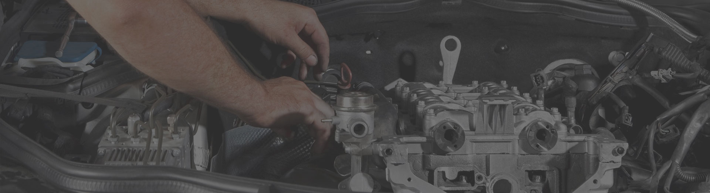
Вы можете присутствовать при разборке, дефектовке и сборке автомобиля.
Мастер выслушает ваши пожелания и предложит варианты ремонта: экономный, для продажи автомобиля или для длительной эксплуатации.
Оригинальные детали или качественные аналоги — на ваш выбор. Подбираем и устанавливаем после согласования с вами.
Вы оставляете машину и рассказываете о неисправности.
Проверяем автомобиль и сообщаем, какие детали требуют замены.
После вашего одобрения подбираем запчасти и устанавливаем их.
Собственное оборудованиеСтаночный парк для механической обработки деталей.
Подготовка специалистовСтажировки на заводах-изготовителях.
ЭвакуаторВозможность вызова, стоимость и сроки уточняйте у мастера.
03 / ОБСЛУЖИВАНИЕ
Экспресс-замена масла с проверкой автомобиля.
Используем масла Divinol · Kroon Oil
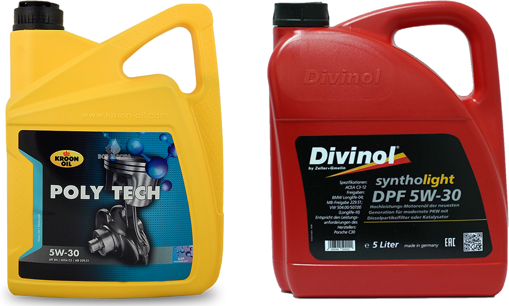
Перед записью уточните у администратора срок действия и условия акции.
РАБОТАЕМ С ВАШЕЙ МАРКОЙ

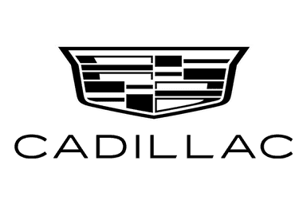
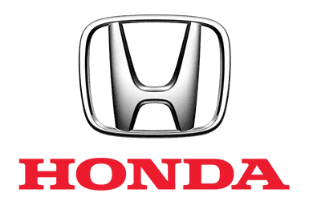
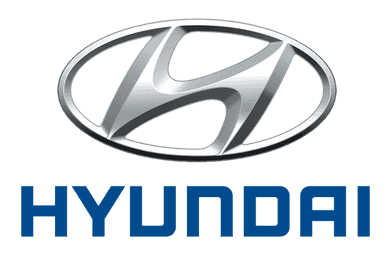
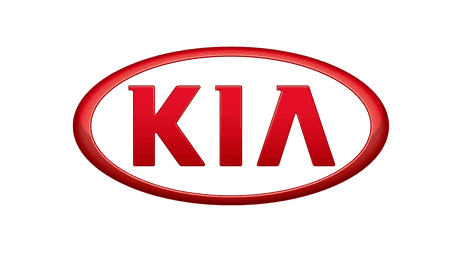

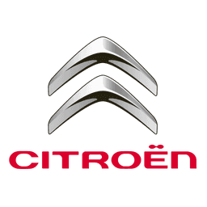
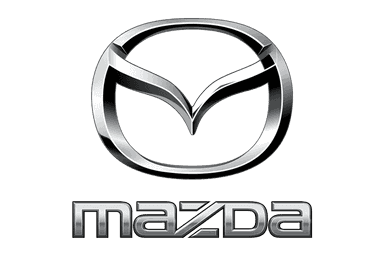
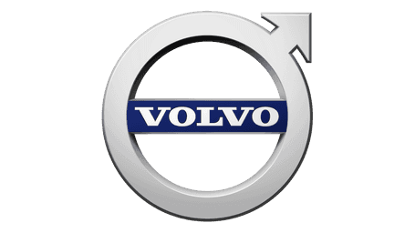
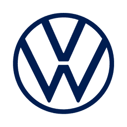
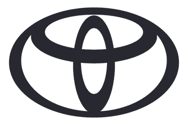
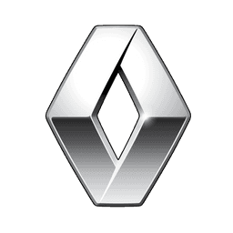
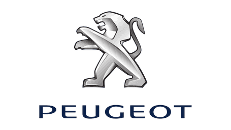
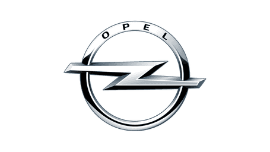

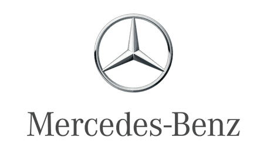
ПОМОЩЬ В ДОРОГЕ
Выезд автомеханика на место и помощь в запуске двигателя. Позвоните мастеру, чтобы обсудить ситуацию и возможность выезда.
04 / ПЕРЕД ВИЗИТОМ
Стоимость зависит от автомобиля и необходимых работ. Позвоните администратору, чтобы обсудить неисправность и уточнить цену.
Да, ремонтная зона открыта. Вы можете присутствовать при разборке, дефектовке и сборке автомобиля.
Диагностика на предмет ошибок, парковка на охраняемой территории во время ремонта и доставка отдельных деталей в день заявки. Перед визитом уточните у администратора условия бесплатных услуг и наличие деталей.
Да, сервис работает с частными и корпоративными клиентами. Условия обслуживания организации можно обсудить по телефону администратора.
Форма показывает будущий сценарий записи и ничего не отправляет. Для реальной записи используйте указанные телефоны сервиса.
05 / КОНТАКТЫ
С 8:00 до 22:00, без выходных